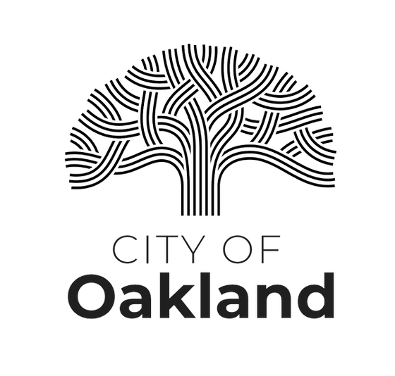

Vivian Wu
(510) 816-9341
vwu83146@usc.edu
Objective
As a Chinese woman who grew up in Oakland, CA, I am an emphathetic, hardworking, and organized advocate for underrepresented voices. My passion for storytelling stems from my desire to rewrite the narrative that media negatively portrays of my community. I truly believe the digital world holds infinite, positive possibilities, and meaningful change originates from honest and compassionate storytelling.
Education
University of Southern CaliforniaFall 2023
- M.A. in Communication Management
- B.S. in Communication
- Minor in Marketing
Experience
F5May 2022 - Aug 2022
GMCX Corporate Communications Intern
- Combined CEC, OCTO, EMEA, and APCJ Speaker Databases into one central F5 Subject Matter Expert Database to ensure an efficient, organized process of experts for PR opportunities
- Automated monthly work plan for the communications team by creating and combining PR Content Tracker, Speaking Opportunities, and Awards Databases to a single database
- Developed two training documents to ensure global communications team, PR agency, and GMCX can use SmartSheets and SME Program Database
- Interviewed 20+ professionals across GMCX to learn about various marketing disciplines, including communications, digital marketing, brand strategy, social media, and project management
- Participated in media relations workshop to develop a media pitch offering F5 SMEs to tech media
ChimeJun 2021 - Aug 2021
Internal Communications Intern
- Prepared event memos for executives to use at virtual conferences, fireside chats, and roundtables
- Transformed Chime’s internal live debrief meetings into an engaging pre-recorded format for 1000 Chimers
- Connected with 100+ members to gather stories for policy communication and social media
- Filmed and edited a video featuring eight interns to be used for future recruiting
Eat. Learn. Play. FoundationMay 2020 - Apr 2022
Foundation Intern
- Built internal and external brand identity with social media posts, website graphics, and a new Style Guide
- Utilized strategic marketing and e-campaigns to grow the Foundation’s Instagram presence by 5000+ followers
- Engaged with the Oakland and Bay Area community by passing out meals and gathering content at foundation events during the start of the pandemic
Skills
- Adobe Photoshop
- Adobe InDesign
- Canva
- Social Media Platforms (i.e. Twitter, Facebook, & Instagram)
- Salesforce
- Powerpoints
- Google Apps
- Microsoft Office
- Fluent in Cantonese, Mandarin, and Taishanese